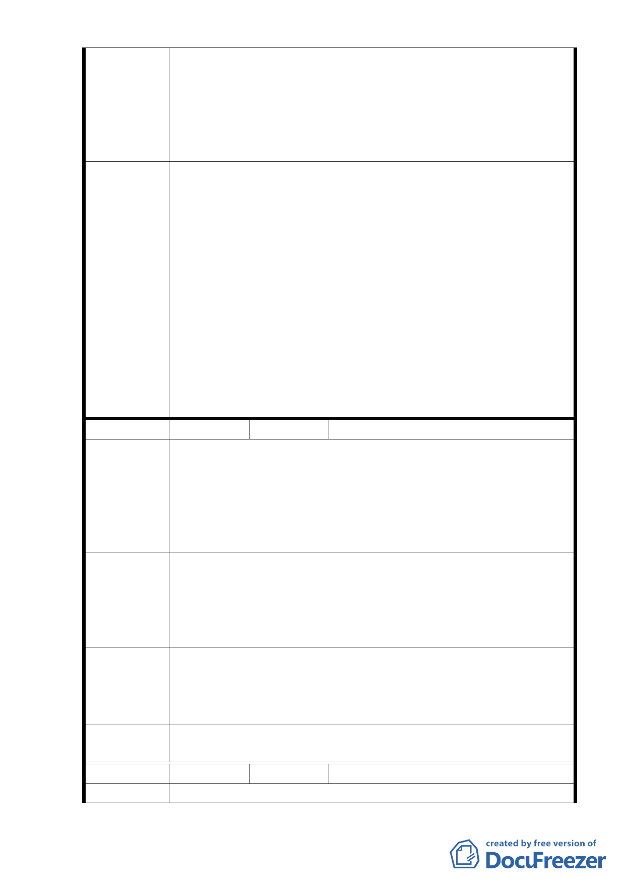

中林森南路 11 巷（忠孝東路 1 段 70 巷至紹興南街段）現為由
西向東之單行道，屬地區性道路，主要功能為周邊社區出入聯
絡道路，並非服務穿越性車流，因此調整位置對整體交通影響
程度不大。另計畫道路寬度調整為 14.5 公尺後，除規劃雙向
車道外，亦規劃人行、自行車及設施帶空間，可提升交通安全
及車行動線之順暢。
一、本案未來開發建築請「臺北市都市設計及土地使用
開發許可審議委員會」續就以下幾項納入考量：
（一）本案西向東交通動線經調整後，周邊車輛進出的
順暢及居民交通的安全性。
（二）變更後基地北側退縮5公尺所呈現廣場或人行步
道空間之規劃。
委員會決議 （三）周邊車流狀況。
（四）在維持基地北側二個商三特街廓之既有出入條件
下，就進出本案14.5公尺寬之計畫道路必須有所
管制。本項並請交通局提供變更前後相關交通流
量之數據供審議單位參考。
二、同市府回應說明。
編 號2
陳情人 許文鼎
1.本計畫區位於捷運善導寺站 3 號與 4 號出口間，行人及車輛
往來相當多，應顧及行人動線安全及交通順暢。
陳情理由
2.本計畫區面臨 20 米林森北路，東側及北側為集合住宅與華
山市場，在高樓建築物充斥下，公園綠地可供居民休憩之用
是調劑生活的最佳去處，更是市民們生活重心。
1.本計畫區未來開發所興建之停車場出入口應集中設置在基
地南側從 16 米青島東路出入。
建 議 辦 法 2.本計畫區未來開發應將空地及綠地集中設置於東側並規劃
為公園綠地供居民休憩之用。
本計畫區未來開發建築須經「臺北市都市設計及土地使用開發
市 府 回 應 許可審議委員會」審議，有關未來建築基地停車場出入口、車
說 明 行動線規劃及開放空間留設等，將於都市設計審議時規範並嚴
格控管，以維交通安全及居民生活品質。
委員會決議 同編號 1.。
編 號3
陳情人 蘇芳春
陳 情 理 由 反對旨揭計畫案原因如下四點，請查照 惠復計畫案評議結果。
- 11 -